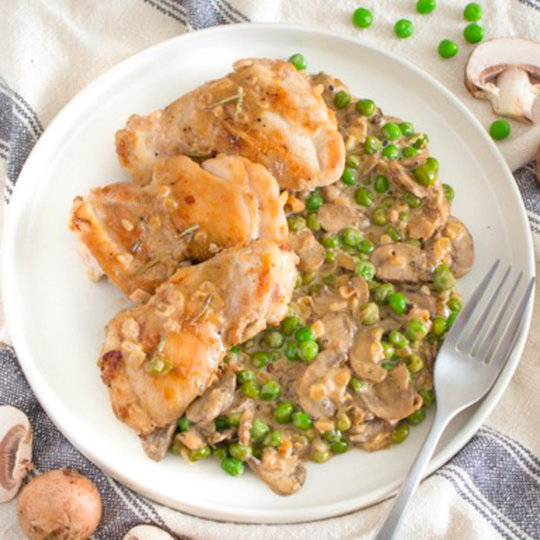

Seared Rosemary Chicken Thighs with Creamy Mushrooms & Peas

Description
Succulent chicken thighs seared to perfection, infused with aromatic rosemary, nestled in a creamy sauce teeming with earthy mushrooms and vibrant peas. It's a heavenly marriage of flavors and textures that delights the senses with every bite.
Ingredients
Serves 6 servings.
- 3 lb. chicken thighs, boneless & skinless
- 1 1/2 lb. cremini mushrooms
- 1 1/2 cups frozen peas
- 3 cloves garlic (or 1 tbsp)
- 12 fl. oz. heavy whipping cream
- 3 oz. Parmesan cheese
- 1 1/2 medium yellow onions
- black pepper
- butter, unsalted
- rosemary, dried
- salt
Instructions
- Wash, dry and thinly slice mushrooms; transfer to a medium bowl and set aside.
- Preheat a large pot over medium-high heat.
- While the pot heats up, pat chicken dry with paper towels and place on a plate. Season with salt and pepper on both sides.
- Once the pot is hot, add butter and swirl to coat the bottom. Working in batches, add chicken in a single layer and cook until golden brown, about 2 minutes per side.
- Transfer to a clean plate and loosely cover with aluminum foil (the chicken will not be cooked all the way through).
- While the chicken browns, peel and dice onions. Peel and mince garlic.
- Return the pot to medium heat, add more butter, and swirl to coat the bottom. Add onion and garlic to the pot. Cook, stirring occasionally, until onions begin to soften (about 3-4 minutes).
- Add mushrooms to the pot and cook until golden brown and tender (for about 5-7 minutes).
- While the mushrooms cook, place peas in a colander and run under hot water to thaw.
- Add peas, cream and spices to the pot. Stir to combine.
- Return chicken to the pot with any accumulated juices, overlapping the chicken thighs slightly if necessary. Cover and simmer until the chicken is cooked through (about 10-12 minutes).
- Meanwhile, finely grate parmesan.
- When the chicken is done, add parmesan to the pot and stir to combine.
- To serve, divide chicken and vegetables between plates, spooning sauce on top. Enjoy!